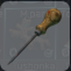
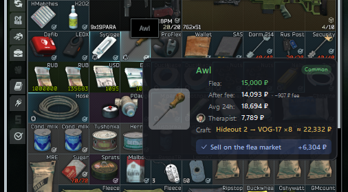
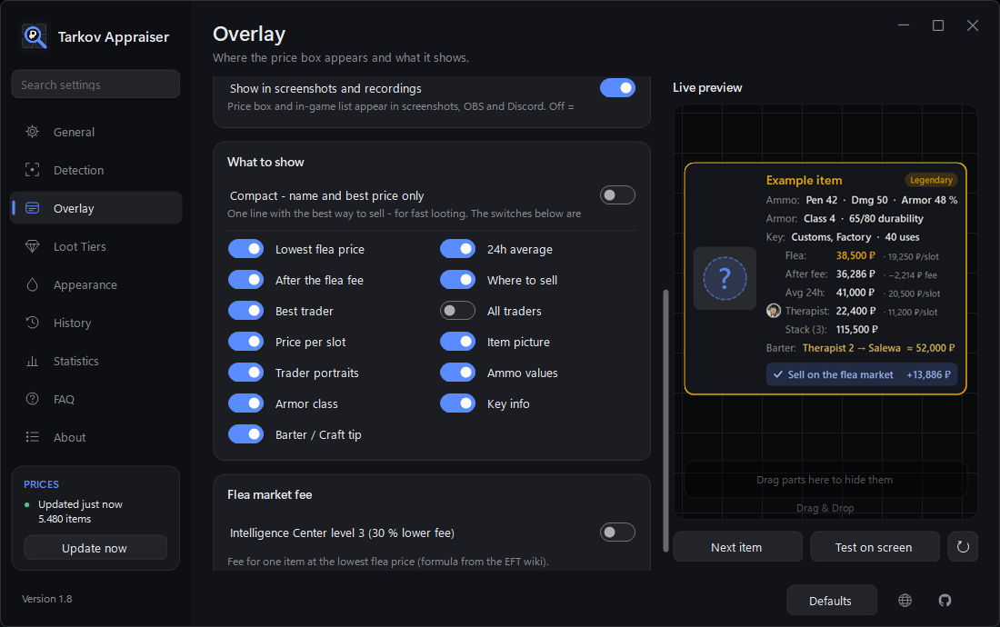

The free Escape from Tarkov price checker
Hover an item and see what it is worth – flea market, traders, barters and crafts – right next to the mouse. Press F8 or just let the mouse rest on an item.
Free & open source · Windows 10 / 11 · Prices from tarkov.dev · No memory reading

Features
Everything you need to decide in a second: keep it, sell it, or trade it in.
Flea market & traders
Lowest flea price, 24h average, what you get after the fee, and the best trader with portrait.
Barter & craft tips
When trading an item in or crafting with it brings clearly more than selling, it tells you – and how much more.
Loot tiers
Prices colored from junk to legendary, valuable loot framed in its tier color, junk dimmed. Ammo ranked by penetration.
Read from the game
Stack counts (e.g. 18 rounds), the real armor durability (179/190) and key uses (37/40) – read from the cell.
Hotkey or automatic
Press F8, or switch on the automatic mode and just rest the mouse on an item while looting.
Your layout
Arrange the price box by drag & drop in a live preview. Compact mode, themes and colors.
History & raid total
The last 20 items, also as a movable in-game list (Alt+F8), plus the value of this raid.
Statistics
Value checked over all raids, your best raid, most valuable finds and most checked items.
One-click updates
PvP and PvE prices, many game languages, English and German interface, updates right inside the app.
Screenshots
The price box in the game and the settings with live preview.


Requirements
Small download, no setup – it only needs .NET 8.
| Windows | Windows 10 (version 2004 or newer) or Windows 11, 64-bit |
| .NET 8 | The .NET 8 Desktop Runtime (or the .NET 8 SDK). Without it, Windows offers the download when you start the program. |
| Text recognition | The Windows text recognition for your game language – usually already installed; the welcome window checks it for you. |
| Game mode | Escape from Tarkov in Borderless or Windowed mode |
| Internet | For the prices from tarkov.dev (saved prices are used when offline) |
Get started in a minute
Download, start, hover.
Download TarkovAppraiser.exe from the latest release. Windows may warn about an unknown app: More info › Run anyway.
Start it. The welcome window walks you through the setup, then it waits in the tray next to the clock.
In Tarkov: hover an item and press F8 – or switch on the automatic mode and just hover.
FAQ
Short answers to common questions.
Is Tarkov Appraiser free?
Yes – free and open source on GitHub.
Does it read the game's memory?
No. It only takes a screenshot around the mouse and reads the item name with the text recognition built into Windows. It never reads or changes game memory or files and never sends input to the game.
Where do the prices come from?
From tarkov.dev, updated regularly. PvP and PvE prices are supported.
The price box does not appear.
Run Tarkov in Borderless or Windowed mode and make sure the item's tooltip is visible. In automatic mode, check that it is on and not paused (Ctrl+F8).
It shows the wrong item.
Check Settings › Detection › Language – it has to match the game language.
Can I get banned for using it?
It does not touch the game, but Battlestate Games decides which third-party programs it tolerates. Nobody can guarantee that using it never leads to a restriction or ban – see the risk notice below.
⚠ Risk of use
Use Tarkov Appraiser at your own risk. Escape from Tarkov is protected by an anti-cheat system, and Battlestate Games decides on its own which third-party programs it tolerates. Tarkov Appraiser only reads the screen and never touches the game, but nobody can guarantee that using it will never lead to a warning, restriction or ban of your account.- Read the game's EULA / terms of use yourself and decide whether you want to use such a tool.
- The authors accept no liability for account restrictions, bans, lost items, wrong prices or any other damage.
- Prices come from a third party (tarkov.dev) and can be outdated or wrong – check before big trades.
Legal notice
- Tarkov Appraiser is an independent fan project. It is not affiliated with, endorsed or sponsored by Battlestate Games Limited.
- Escape from Tarkov and all related names, logos and item pictures are trademarks or property of Battlestate Games Limited.
- Price and item data are provided by tarkov.dev and remain the property of their respective owners.
- The software is provided "as is", without warranty of any kind.